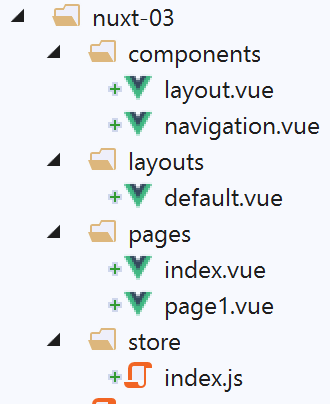
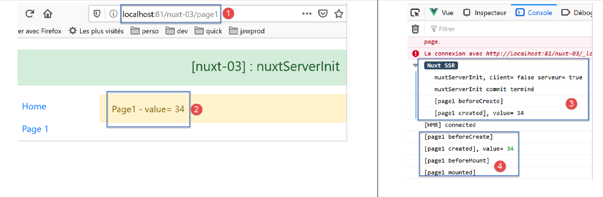

6. مثال [nuxt-03]: nuxtServerInit
يهدف مشروع [nuxt-03] إلى توضيح وظيفة تخزين [Vuex] تسمى [nuxtServerInit]. تسمح هذه الوظيفة للخادم بتهيئة مخزن [Vuex]، تمامًا كما تفعل وظيفة [fetch]. ولكن على عكس وظيفة [fetch]، لا يتم تنفيذ وظيفة [nuxtServerInit] أبدًا من قبل العميل.

يتم إنشاء مشروع [nuxt-03] مبدئيًا عن طريق استنساخ مشروع [nuxt-01]، حيث يتم إزالة الصفحة [page2] الموجودة في المجلد [pages] ومكون [navigation]. يتم إنشاء المجلد [store] عن طريق استنساخ المجلد [nuxt-02/store].
6.1. مخزن [Vuex]
سيتم تنفيذ مخزن [Vuex] بواسطة ملف [store/index.js] التالي:
/* eslint-disable no-console */
export const state = () => ({
// meter
counter: 0
})
export const mutations = {
// increment counter by one [inc] value
increment(state, inc) {
state.counter += inc
}
}
export const actions = {
async nuxtServerInit(store, context) {
// who executes this code?
console.log('nuxtServerInit, client=', process.client, 'serveur=', process.server)
// waiting for a promise to be fulfilled
await new Promise(function(resolve, reject) {
// this is normally an asynchronous function
// we simulate it with a one-second wait
setTimeout(() => {
// success
resolve()
}, 1000)
})
// modify the blind
store.commit('increment', 34)
// log
console.log('nuxtServerInit commit terminé')
}
}
- الأسطر 1–12: مشابهة لما كانت عليه في مشروع [nuxt-02]؛
- الأسطر 14–32: نقوم بتصدير كائن [actions]. هذا مصطلح محجوز في مخزن [Vuex]؛
- السطر 15: نحدد دالة [nuxtServerInit]. سيتم تنفيذ هذه الدالة بواسطة الخادم عند بدء تشغيل التطبيق. وتتمثل مهمتها المعتادة في تهيئة مخزن [Vuex] باستخدام بيانات خارجية تم الحصول عليها عبر دالة غير متزامنة. ينتظر [nuxt] حتى تعود هذه الدالة بنتائجها قبل بدء دورة حياة الصفحة المطلوبة. تأخذ الدالة معلمتين:
- مخزن [Vuex] المراد تهيئته؛
- سياق [Nuxt] الحالي؛
- الأسطر 19-26: ننتظر اكتمال الإجراء غير المتزامن، وهنا انتظار مصطنع لمدة ثانية واحدة (السطر 15)؛
- السطر 28: يتم تعيين العداد على 34؛
- السطران 17 و 30: سجلات لتتبع تنفيذ دالة [nuxtServerInit]؛
6.2. صفحة [index]
ستكون صفحة [index] كما يلي:
<!-- page [index] -->
<template>
<Layout :left="true" :right="true">
<!-- navigation -->
<Navigation slot="left" />
<!-- message-->
<b-alert slot="right" show variant="warning"> Home - value= {{ value }} </b-alert>
</Layout>
</template>
<script>
/* eslint-disable no-undef */
/* eslint-disable no-console */
/* eslint-disable nuxt/no-env-in-hooks */
import Layout from '@/components/layout'
import Navigation from '@/components/navigation'
export default {
name: 'Home',
// components used
components: {
Layout,
Navigation
},
data() {
return {
value: 0
}
},
// life cycle
beforeCreate() {
// client and server
console.log('[home beforeCreate]')
},
created() {
// client and server
this.value = this.$store.state.counter
console.log('[home created], value=', this.value)
},
beforeMount() {
// customer only
console.log('[home beforeMount]')
},
mounted() {
// customer only
console.log('[home mounted]')
}
}
</script>
- السطر 37: يتم تعيين قيمة العداد التي تم تهيئتها بواسطة الدالة [nuxtServerInit] إلى الخاصية [value] في السطر 27. يتم عرض هذه القيمة في السطر 7؛
- سيتم تنفيذ السطر 37 من قبل كل من الخادم والعميل. في كلتا الحالتين، ستتلقى الخاصية [value] نفس القيمة، مما يضمن أن الصفحة التي تم إنشاؤها بواسطة الخادم تتطابق مع تلك التي تم إنشاؤها بواسطة العميل؛
6.3. الصفحة [page1]
يتم الحصول على صفحة [page1] عن طريق نسخ صفحة [index]. ثم نقوم بتعديل نصها لاستبدال [home] بـ [page1]:
<!-- page [page1]] -->
<template>
<Layout :left="true" :right="true">
<!-- navigation -->
<Navigation slot="left" />
<!-- message-->
<b-alert slot="right" show variant="warning"> Page1 - value= {{ value }} </b-alert>
</Layout>
</template>
<script>
/* eslint-disable no-undef */
/* eslint-disable no-console */
/* eslint-disable nuxt/no-env-in-hooks */
import Layout from '@/components/layout'
import Navigation from '@/components/navigation'
export default {
name: 'Page1',
// components used
components: {
Layout,
Navigation
},
data() {
return {
value: 0
}
},
// life cycle
beforeCreate() {
// client and server
console.log('[page1 beforeCreate]')
},
created() {
// client and server
this.value = this.$store.state.counter
console.log('[page1 created], value=', this.value)
},
beforeMount() {
// customer only
console.log('[page1 beforeMount]')
},
mounted() {
// customer only
console.log('[page1 mounted]')
}
}
</script>
هذه الصفحة موجودة فقط لتسهيل التنقل بين صفحتين.
6.4. التنفيذ
يتم تعديل ملف [nuxt.config.js] على النحو التالي:
// source code directory
srcDir: 'nuxt-03',
// router
router: {
// application URL root
base: '/nuxt-03/'
},
// server
server: {
// service port, default 3000
port: 81,
// network addresses listened to, default localhost: 127.0.0.1
// 0.0.0.0 = all the machine's network addresses
host: 'localhost'
}
تكون الصفحة المعروضة عند التنفيذ كما يلي:

- في [5]، نلاحظ أن الدالة [nuxtServerInit] تم تنفيذها من قِبل الخادم قبل بدء دورة حياة صفحة [index]. وقد انتظرت [nuxt] انتهاء الدالة غير المتزامنة من عملها قبل المضي قدماً في دورة الحياة؛
- في [4]، نرى أن العميل لم ينفذ الدالة [nuxtServerInit]؛
الآن دعونا ننتقل مرتين: index --> page1 --> index. تكون السجلات عندئذٍ كما يلي:

- في [1-2]، نرى أن الدالة [nuxtServerInit] لم يتم تنفيذها من قبل العميل؛
الآن دعونا نكتب عنوان URL لصفحة [page1] يدويًا لإجبار الخادم على الاستجابة:

في [3-4]، نرى نفس الآلية التي سبقت تحميل صفحة [index] عند بدء التشغيل. دعونا نلخص ما سبق ذكره: عندما نجبر صفحة على الاتصال بالخادم، يكون الأمر كما لو أن التطبيق يعاد تشغيله بصفحة رئيسية هي الصفحة المطلوبة؛